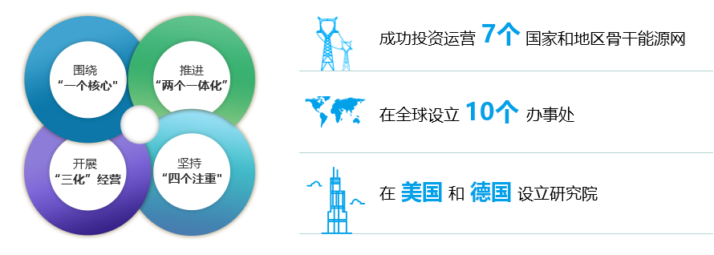

basic situation
The construction of “One Belt, One Road” is a major measure for China to adapt and lead globalization and build a new pattern of all-round open development. In recent years, the State Grid Corporation has followed the principles of mutual cooperation, co-construction, sharing, equality and mutual benefit, based on the main business, giving full play to its advantages, actively serving and participating in the construction of the “Belt and Road” and successfully investing in Brazil, the Philippines, Portugal, Australia and Italy. , Hong Kong, Greece and other seven countries and regions backbone energy network, set up 10 offices around the world, set up research institutes in the United States and Germany. In the process of promoting the “One Belt, One Road” construction and international development, State Grid Corporation promotes “two integrations” (investment, construction and operation ) around “one core” (with service and promotion of “One Belt and One Road” as the core). And technology, equipment, standards integration go out), carry out "three-oriented" operation (long-term, market-oriented, localized operation), adhere to the "four focuss " (focus on serving the party and the country's overall foreign affairs, paying attention to mutual benefit and win-win Priority is given to safety, stability, risk control, and standard operation and long-term stability.” The projects invested and constructed by the State Grid Corporation are related to local economic and social development and are important infrastructures of various countries and regions. All projects are operating smoothly. The management norms have been fully affirmed and highly appraised by local social and regulatory agencies, and have established a good international reputation. Several projects of the State Grid Corporation have become “golden business cards” in the international arena, creating economic, social and environmental values for the local community. Responsible international corporate image.
